Hi, I'm Sofia
A ukrainian front-end developer with passion to build not only pretty, but user friendly websites.
A ukrainian front-end developer with passion to build not only pretty, but user friendly websites.
Here's the projects I made as a part of learning front-end web development.
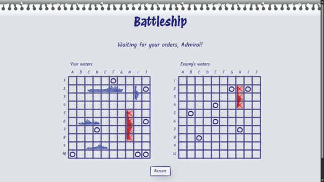
A classic battleship game project practicing TDD (Test Driven Development). Built with Jest, NPM, Webpack, JavaScript, CSS, and HTML.
Live demo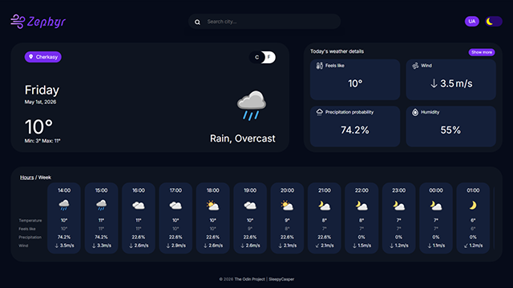
A weather app project using API to practice asynchronous code. Built with NPM, Webpack, Java Script, CSS and HTML
Live demo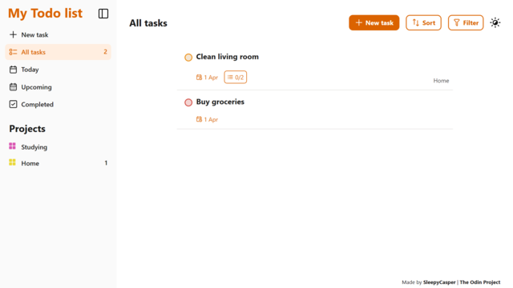
A todo list app to practice OOP principles. It has features like sorting, projects and task organizing and local storage. Built with NPM, Webpack, Java Script, CSS and HTML
Live demo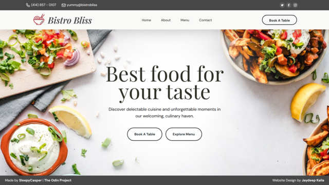
A simple landing webpage to practice using ES6 Modules and dynamic rendering. Built with NPM, Webpack, Java Script, CSS and HTML
Live demo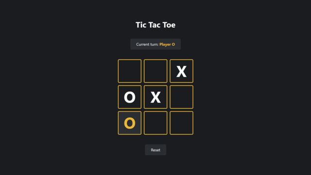
A tic tac toe game app practicing to write a privately scoped code in JS by using closures, factory functions, module patterns and IIFEs. Built with JavaScript, CSS, and HTML.
Live demo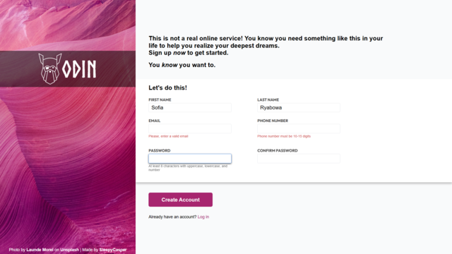
A sign up layout page to practice forms with simple validation. Built with CSS and HTML.
Live demo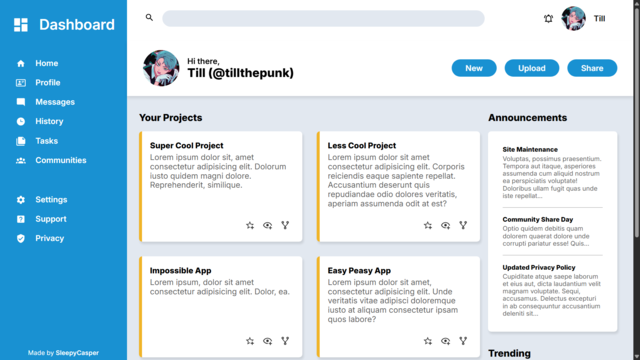
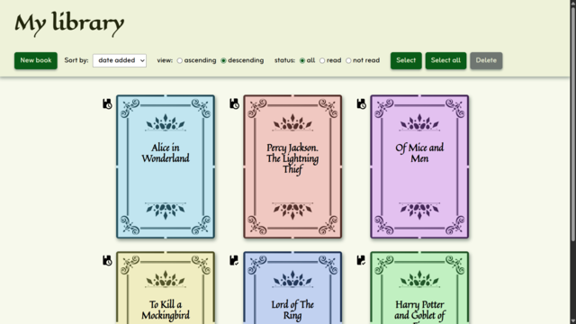
A virtual library app practicing object constructors in JS and implementing local storage. Built with JavaScript, CSS, and HTML.
Live demo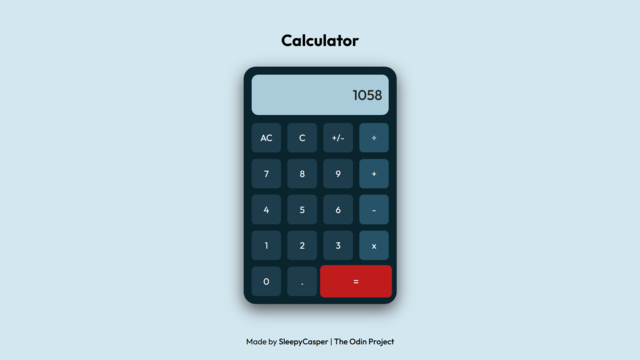
A calculator app as a final project in learning foundations. Built with JavaScript, CSS, and HTML.
Live demo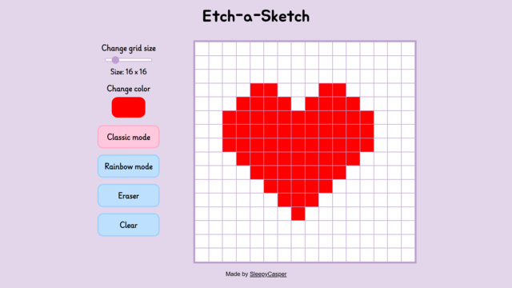
A drawing app to practice DOM manipulation and event handling. Built with JavaScript, CSS, and HTML.
Live demo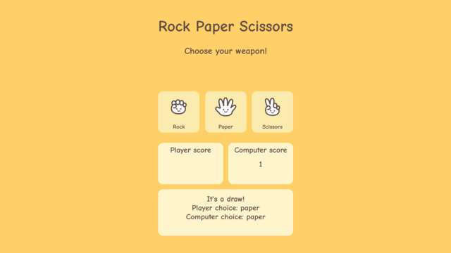
A digital version of the game with implementation of computer logic and practicing problem solving. Built with JavaScript, CSS, and HTML.
Live demo